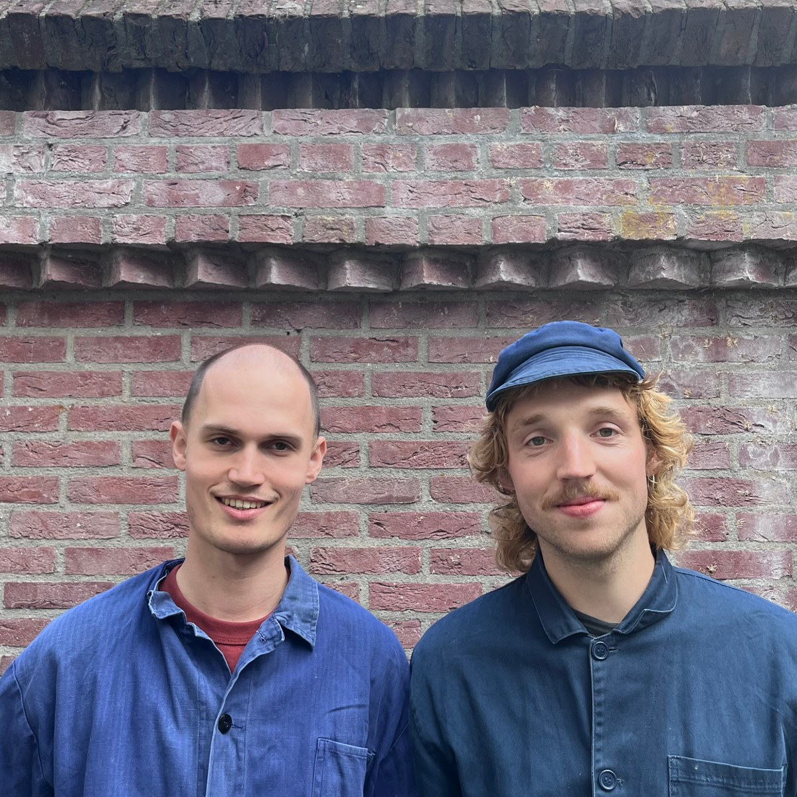

Habitus Groen
Habitus GroenOver ons
Over Habitus
Wij zijn Koen en Wick, twee tuiniers en vrienden met een achtergrond in architectuur en filosofie. Wij ontwerpen en leggen tuinen aan die er het hele jaar door goed uitzien, tegen een droge zomer kunnen en de biodiversiteit bevorderen. Ons tuinbedrijf heet Habitus, het woord voor de volledige verschijningsvorm van een plant. Daarnaast schrijft de socioloog Pierre Bourdieu over de habitus als de gewoontes die we ons eigen hebben gemaakt en die bepalen hoe we ons door de wereld bewegen. Wij zien de tuin dan ook niet slechts als een verzameling planten, maar als een deel van het dagelijkse leven dat we de rest van de dag met ons meedragen.
Onze visie
Onze visie op tuinen wordt gekenmerkt door een focus op duurzaamheid met zorgvuldig materiaalgebruik en hergebruik waar mogelijk. We kiezen zoveel mogelijk voor inheemse planten die insecten en bodemleven ondersteunen. Daarnaast vinden wij het belangrijk om ons te richten op klimaatbestendige tuinen. In het ontwerp houden wij rekening met planten die het tijdens droge periodes ook nog goed doen. Onze architectuurachtergrond en plantenkennis zorgen voor tuinen met een sterke indeling die er het hele jaar door goed uitzien.
Koen Klavert
Koen studeerde architectuur (built environment) aan de Hogeschool van Amsterdam en rondde dit cum laude af met een stage bij Zecc Architecten. Hij werkt in het klusteam van Vrijhaven De Nijverheid, waar hij meubels repareert, (tuin)kasten bouwt en schilder- en onderhoudswerk doet. Bij Collectief Moes geeft hij workshops en werkt hij aan productdesign. Daarnaast is Koen een echte plantenliefhebber. Van kinds af aan ondernam hij boswandelingen met zijn gezin en thuis wordt gekookt met groenten uit de eigen tuin.
Wick Douma
Wick heeft filosofie (MA) en psychologie (BA) gestudeerd aan de KU Leuven. Voordat hij ging studeren is hij op zijn zeventiende vertrokken naar Engeland om een halfjaar als tuinier te werken bij Nicholsons, een tuinbedrijf in Oxfordshire. Hij heeft meegewerkt aan verscheidene grote projecten met een focus op de aanleg van tuinen. Hier is zijn liefde voor planten opgebloeid en in 2026 heeft hij zich hier weer mee bezig kunnen houden nadat hij was gevraagd door het restaurant Food with Varinder om een tuin te ontwerpen en aan te leggen. Als filosoof kijkt hij naar wat een plek met mensen doet. Hij vertaalt dit naar tuinen waar mensen tot rust kunnen komen en graag blijven zitten.
